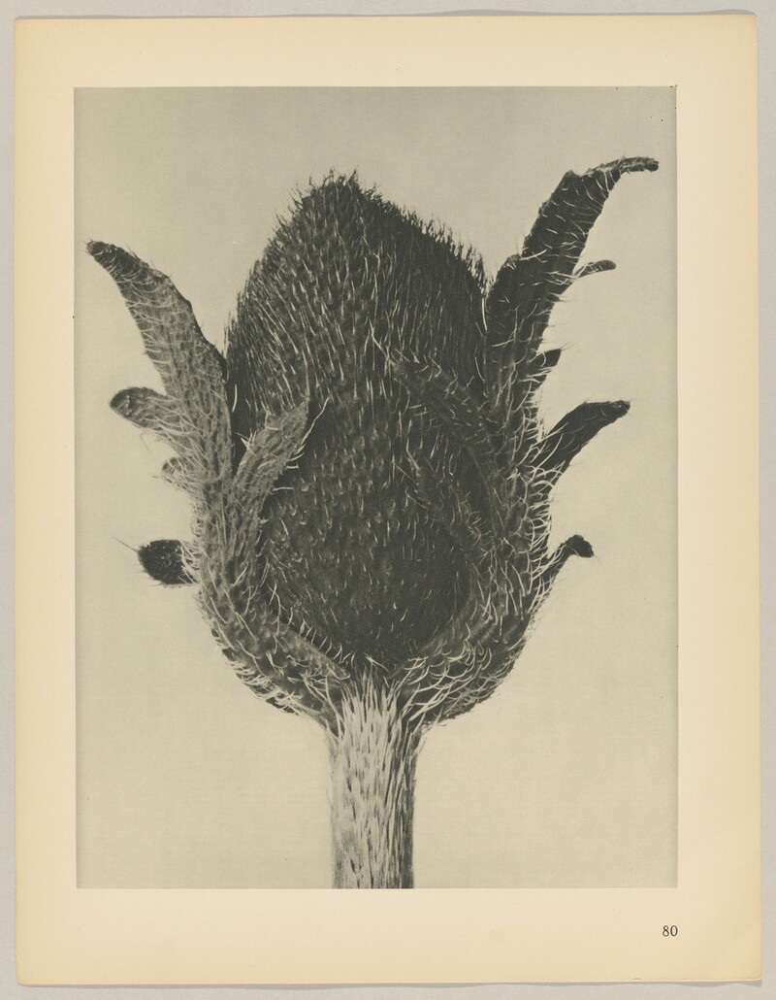
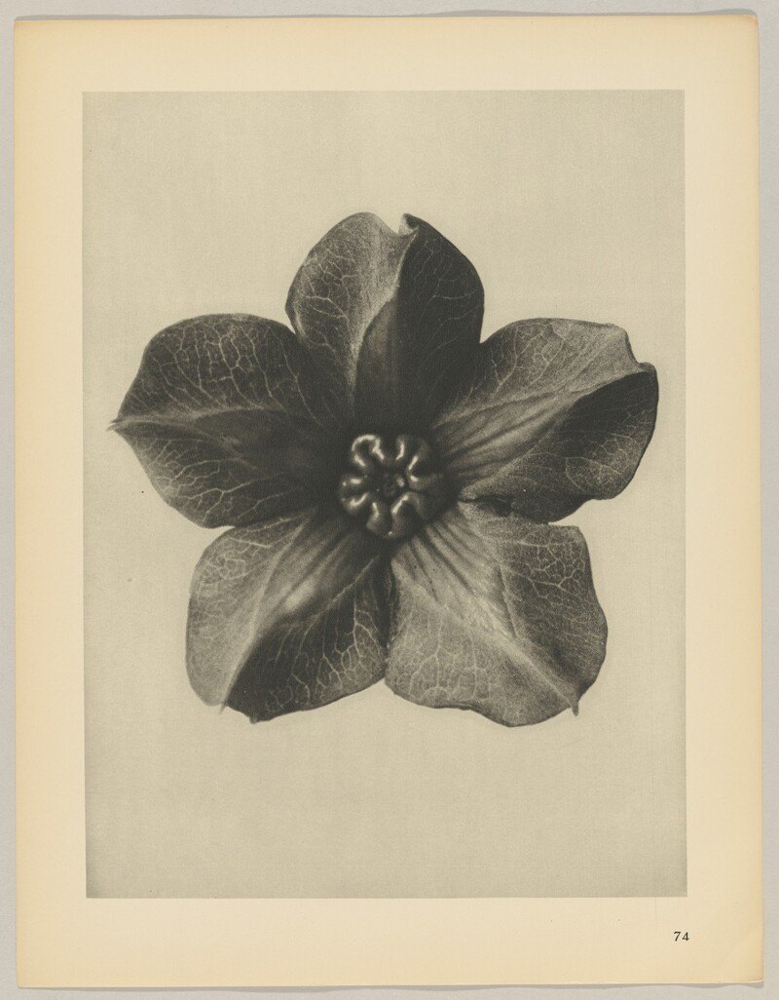
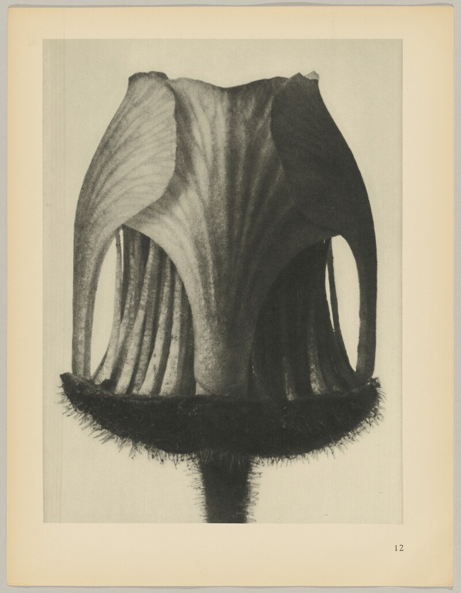

Бутон / 01Всё начинается
Всё начинается
с изгиба.
Лепестки ещё собраны. Будущая форма уже существует — ей осталось раскрыться.
Проследить раскрытие

Интерактивная скульптура цветка: указатель проявляет металлические лепестки. После первого экрана цветок перемещается между тремя главами, раскрывается и становится бронзовым.
Лист. / Лаборатория формы
Проведите по цветку.
Откройте другую сторону.
Подготавливаем форму…
Лепестки ещё собраны. Будущая форма уже существует — ей осталось раскрыться.
Проследить раскрытие
Сначала внешние лепестки. Затем внутренние. Каждый поворот меняет силуэт целого.
Посмотреть с другой стороныХолодное серебро становится тёплой бронзой. Отражения скользят по тем же изгибам.
К фотографическим листам
Семь наблюдений / Карл Блоссфельдт, 1928
Завиток, ритм, изгиб.
Маленькие формы, которые хочется рассмотреть.
Наведите на лист.
Нажмите, чтобы рассмотреть.Выберите лист
или листайте стрелками.
02 / Внутри формы
Молодой побег ещё свёрнут. В нём уже есть направление, движение и собственный характер.
Шесть стеблей повторяют один жест. Их высота, наклон и расстояние друг от друга создают ритм.
Приблизьтесь — и знакомый силуэт превратится в сложную линию, которую хочется проследить до конца.
03 / Полевые заметки
Не искать объяснение.
Просто дать взгляду задержаться.
Разные имена. Один язык линий.
Семь фотогравюр из «Urformen der Kunst». Растения здесь становятся скульптурами — достаточно приблизиться.